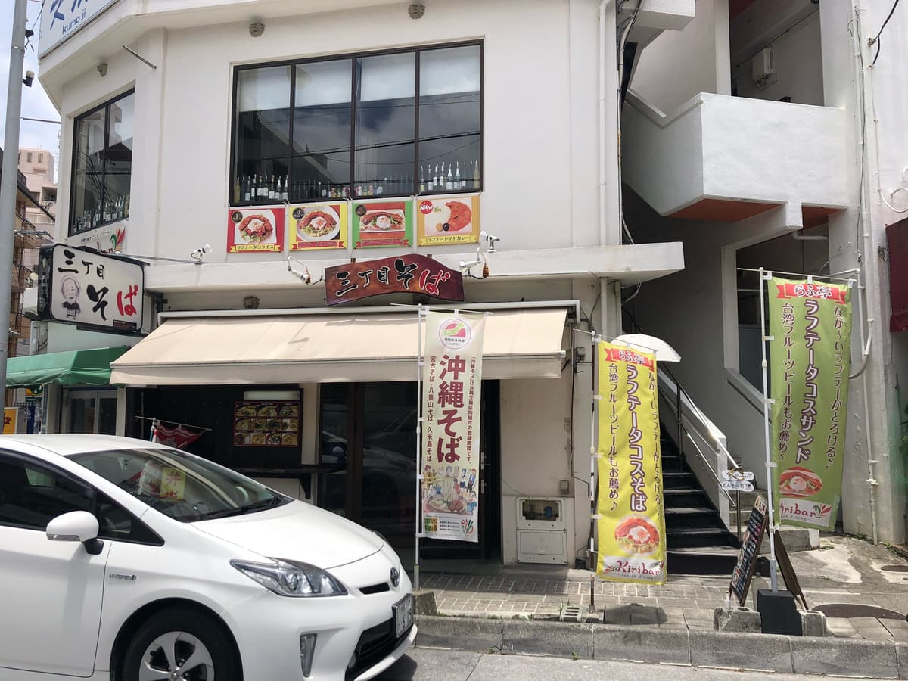
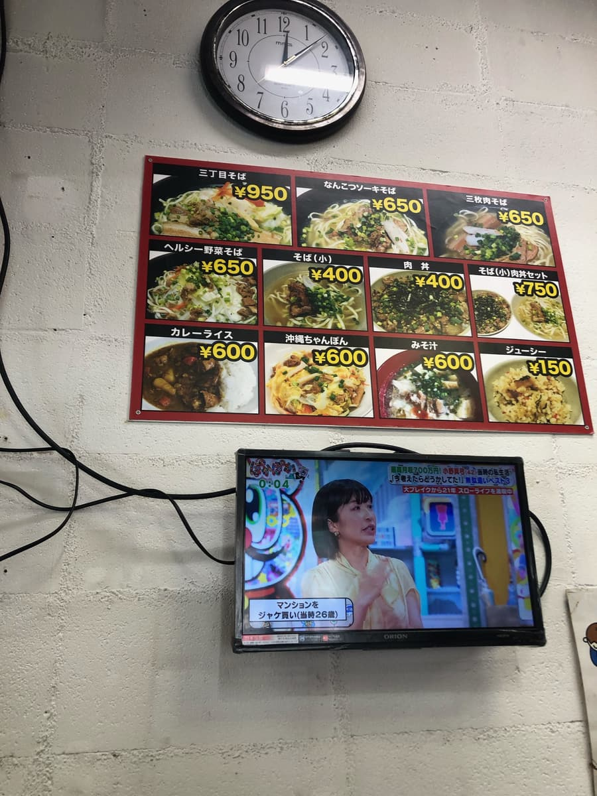
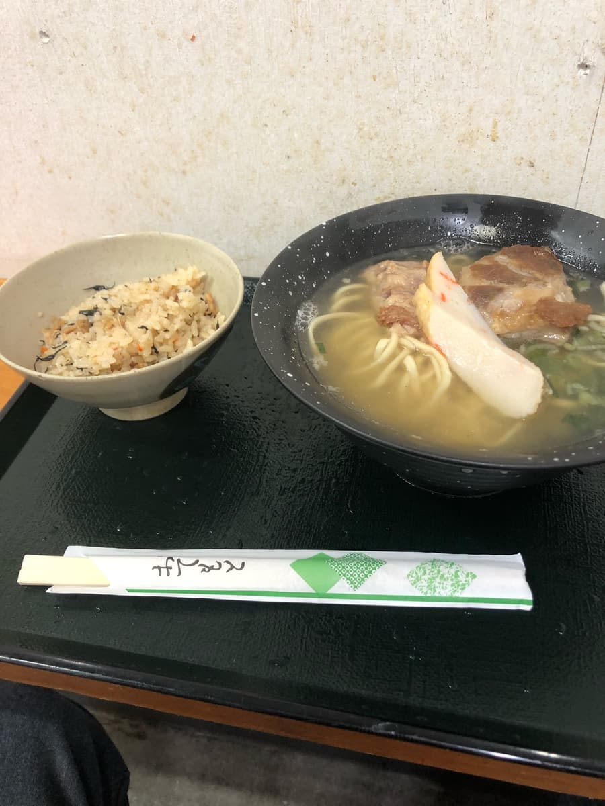

2023年6月吃的😄

因为我在国际通尽头的「Palette久茂地」有事，把车停在附近大楼的收费停车场，往安里方向一边走一边找冲绳面店，在国际通里面的街道找的时候偶然发现了这家😄
总觉得有种一期一会的感觉，很不错呢(^_^;)
冲绳已经进入梅雨季，但这次雨不多，这天也超级热，从Palette久茂地走了一段路，满身大汗地进到店里。店里冷气开得相当强，太棒了😁

看了菜单，觉得除了「三丁目面」以外，和其他店比起来都比较便宜。客层也是在地客比较多的店。
点了「软骨排骨面」。

看菜单还以为只有面，没想到竟然还附了冲绳炊饭（Jushi，冲绳风炊饭），真是令人开心的惊喜😆
很想先从饭开始吃，但还是先进行仪式，喝一口汤。外表是有点混浊的汤头，是和猪骨高汤综合、带点柴鱼基底味道的汤头，很好喝😋
面是细的直面，偏软呢。软骨排骨Q弹又入味，绝对没问题。很好吃😄 我把它放在冲绳炊饭上像猪肉丼一样吃，超棒的（笑）
评分（10分/15分）：很正常的好吃。我觉得水准算相当不错😄 离国际通很近，来购物或观光的时候要不要来吃吃看呢。我觉得是便宜又好吃的冲绳面。
※店家没有停车场，所以要停在周边的投币式停车场。
面：★★★☆☆（3）
汤头：★★★✬☆（3.5）
配料：★★★✬☆（3.5）